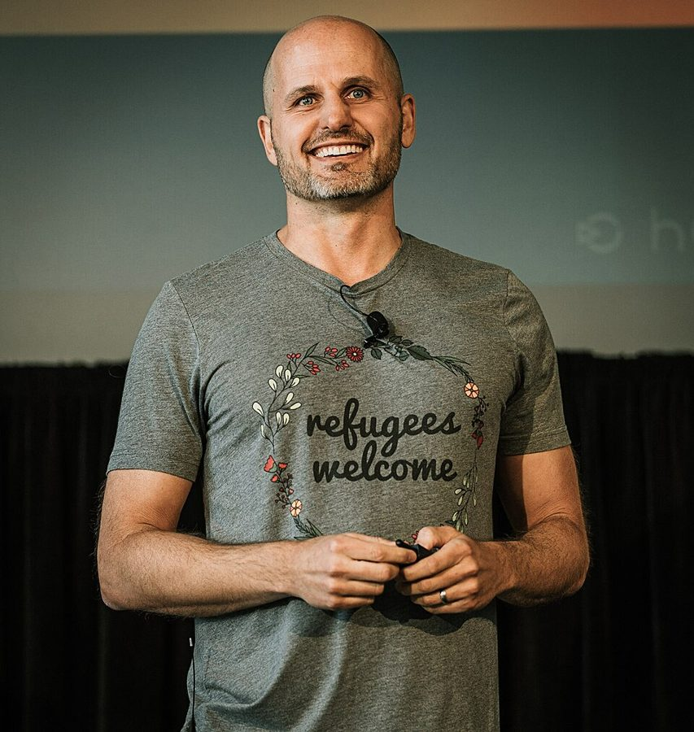

new grad
… a new grad candidate named Tom …
应届毕业生
new graduate 的简称。硅谷公司常把应届生招聘单列，叫 new grad hiring，相当于国内的校招。
招人最能决定一个团队的将来，也是新经理最没把握的事：几个小时的面试，凭什么判断一个人？作者从她第一次「冒险」投赞成票的应届生讲起，接着是一个紧张得不敢看人、却答得最扎实的候选人，上司从大公司请来、起初让她很不服气的几位「新派」经理，还有上司一句追问，让她四个月招满了所有空着的领导职位。读的时候抓两条线：面试本身靠不住，要去找更可靠的信号；招人是经理自己的活，交不给招聘部门。
上一章讲开会。前面几章讲怎样带好手上的人，这一章往前退一步：人从哪里来。§3 里「别要有毒的人」直接指回第 3 章的聪明的混蛋；§4 讲团队变大以后怎么招，和下一章「把事做成」、第 9 章「带大团队」连着读。引言里她说过，第一次当面试官时手一直在抖，这一章的开头就是那段时期的事。
这一章引的三项研究（Google 的面试数据、交响乐团的屏风试奏、麦肯锡的多元化报告）流传很广，后来也都受到质疑或被修正。把它们当作者的论据，不当定论，详见「今天怎么看」。
几个小时的面试，凭什么决定一个人要不要进你的团队？
读的时候带着这几个问题。不用先找答案，读完回来对照「检查一下理解」。
这一章的每一节一条，按原书顺序。粗体是本站给的节名，后面是档和英文词数；下面一行是原书小标题、纸书页码和这一节开头几个英文词；再下面是译本的小標題和开头几个字，在译本电子书里搜它就能跳过去。每节标了档：「先读」是这一章的骨架，「有空」例子更多、讲得更细，跳过不丢线。读完打个勾。
先把这一章用到、作者默认你懂的几个概念讲一遍。讲的是概念本身和它在管理界的来历，作者拿它推出什么，读原书时自己看。
工业心理学里研究得最多的选人办法之一。做法有三条：同一个职位的候选人问同样的问题；每道题事先写好评分标准，最好给每一档配上「什么样的回答算几分」的例子；面试官按题打分、各自独立打分，最后再汇总。题目常分两种：问过去（「讲一次你和同事起冲突的经历」，叫行为面试），问假设（「上线前一天发现数据对不上，你怎么办」，叫情境面试）。
和它相对的是聊天式面试：想到哪问到哪，最后凭整体印象下结论。几十年的元分析一再发现，结构化面试预测日后表现明显更准。道理不神秘：题目一样，候选人之间才能比；按题打分，紧张、口才、合不合眼缘这些印象就少掺进来。
在这一章：§3「事先准备问题」做到了第一条；「多找几位面试官」里讨论前先各自写下结论，是第三条。评分标准书里没讲。
背景调查是招人之前，向候选人以前的上司、同事了解他的情况。美国公司的常规做法是请候选人提供几位推荐人，打电话去问；可候选人只会挑说好话的人，所以不少经理更看重非正式背调（backchannel）：通过自己信得过的人脉，找到和候选人共事过、又不在他名单上的人打听。
国内大公司更常见的是第三方背调公司，一般在拿到候选人书面授权以后，核实学历、任职经历，有时也访谈前上司。非正式背调在国内互联网圈同样普遍，风险也一样：候选人可能还没告诉现在的公司自己在看机会，打听得不小心就会害了他；一个人的话也可能带着私怨，要多听几个人。
在这一章：§3「找可信的人推荐」：作者引 Kevin Ryan 说背调最要紧；她说候选人自己给的推荐人多半问不出实话，不如请信得过的人引荐。
这两个词作者都没用，但这一节讲的正是它们之间的争论。culture fit（文化契合）原意是看候选人认不认同团队的价值观和做事方式，比如重视质量、对人坦诚。麻烦在于它很容易滑成「像不像我们」：社会学家 Lauren Rivera 2012 年研究美国顶级投行、律所和咨询公司的招聘，发现面试官常把「合拍」看得比能力还重，而「合拍」看的多是爱好、经历这类生活方式上的相似。
culture add（文化增量）是后来硅谷流行的反提法：价值观要一致，但要找能带来团队里还没有的视角和经验的人。实用的做法是把两件事拆开：价值观用具体行为去考（出了错怎么处理、怎样对待意见不同的人），「气质像不像我们」不算理由。
在这一章：§3 上司 Kate 从大公司招来的「新派」经理，是增量的例子；§4 说招经理要价值观一致，是契合的那一面。
以后带人碰到这些事，从这里查。每张卡先说动手前要想清楚什么，再用本站的话转述作者的办法（不照抄原书的清单），然后是书外的补充和最容易犯的错，最后指回书里讲它的那一节和纸书页码。全书的情境卡汇总在情境卡。
书里：Design Your Team Intentionally，纸书 p.165–166；Describe Your Ideal Candidate as Precisely as You Can，纸书 p.167
书里：Show Candidates How Much You Want Them，纸书 p.169–170；Take the Long View with Top Talent，纸书 p.183–184
书里：Get Multiple Interviewers Involved、Look for Passionate Advocates Rather Than Consensus，纸书 p.173–174
读英文纸书可能卡住的地方，按原书顺序分节排。灰色斜体是原文里连续的几个词，后面是纸书页码，翻书找得到；标「每个字都认识」的，是每个词都眼熟、合起来意思却变了的，最容易读错。点「记下」收进词本。
按在书里出现的顺序排，标题前是节号。只讲到读懂这一章需要的程度。书里的同事和候选人（Tom、Mason、Kate、Chris、Anne、Dixon……）是普通人，作者有的用了化名，这里不另作介绍。
美国科技公司里，招人是两拨人合作。招聘人员（recruiter）管流程：找人、约面试、谈薪资、发录用通知，有的公司还有专门在领英上搜人的 sourcer。用人经理（hiring manager）是这个职位将来的上司：定要什么人、参与面试、做最后决定。面完以后，面试官们开一个评议会（debrief）一起讨论，有的公司（比如 Google）再交给招聘委员会拍板。国内大致对应 HR、HRBP 和用人部门的负责人，高端职位常有猎头。作者这一节的意思是：流程可以交给招聘人员，判断和诚意交不出去。
作者引的钢琴手故事出自她 2018 年在《哈佛商业评论》上的文章《How to Hire》（书后注释有出处）。「左右脑切换」是她的说法，当个比喻听就好：神经科学并不支持把人分成「左脑型」「右脑型」，2013 年犹他大学一项分析上千人脑扫描的研究就没找到这种分型。

作者引的「零关系」「一团随机」出自 2013 年《纽约时报》记者 Adam Bryant 对他的采访。同一篇采访里他还说，Google 曾经出名的智力题完全是浪费时间，好用的是有统一评分标准的结构化行为面试。作者引了前半，没引后半，后半见「今天怎么看」。
美国的大交响乐团从 1970 年代起陆续在招人试奏时拉一道屏风，评委只听声音、看不见人。经济学家 Claudia Goldin（哈佛）和 Cecilia Rouse（普林斯顿）2000 年在《美国经济评论》上发表论文，用几家乐团的试奏记录估计屏风的作用，作者引的「初选通过的概率提高 50%」就出自这里。书里说「哈佛的研究」，其实是两校学者合写的。Goldin 后来因研究女性在劳动市场上的处境，获得 2023 年诺贝尔经济学奖。这项研究后来的争议，见「今天怎么看」。
作者引的是他 2012 年在《哈佛商业评论》上的文章：多数经理高估简历和面试、低估背调，而背调的关键是找到肯说实话的人。非正式背调是怎么回事，见上面的概念块。
招聘团队把找人的过程画成漏斗（funnel）：每一层都有人走掉，每一层的通过率叫转化率。作者在 §3 末尾和 §4 开头各算了一遍，用的是她自己说明是编的数字。真实的转化率差别很大：社招和校招不同，大公司和小公司不同，行情好坏也不同，最好拿自己团队过去一年的记录来算。
作者的「长假测试」问的是：你离开几个月，你的上司要插手多少？她提到另一种叫法「被公交车撞了」，嫌太晦气。程序员对后者很熟：软件团队讲「巴士系数」（bus factor），指至少要几个人同时「被车撞」，项目才会停摆；系数是 1，就是有人成了单点。作者说的是同一件事，对象从代码换成了带人的经理。同一节末尾「把乐高让出去」是她的朋友 Molly Graham 的说法，出自创投机构 First Round 的博客文章。
对着译本读这一章时，下面这些地方会把人读歪。方框里是译本的原句，在译本电子书里搜它就能找到；灰色斜体是英文原文那一处，后面是纸书页码。只收意思错了、反了、漏了的，措辞上的出入不收。全书的勘误汇总在译本勘误。
… problem of overstretched reports and understaffed …
译本：「雇人感覺像是為了解決報告太多」
reports 在这本书里是「下属」。原文说团队人手太紧、下属个个超负荷、项目缺人，招人像是不得不做的救火。译本把 reports 当成了文件报告。
… felt so attentive, focused, and fast
译本：「非常清楚需要什麼樣的人選」
原文是候选人觉得面试过程很周到、很专注、很快，说的是对候选人的照顾。译本丢了「周到」，又把「专注」改成公司清楚要什么人。这一小节讲的是面试体验，按原文理解。
… ramping up the number of interviews …
译本：「我們開始增加面試官人數後」
原文说公司开始大量面试以后，评议会上常听到「勉强可招」。讲的是招聘规模变大，不是一场面试多派了几个面试官。
… are adamant about wanting to work …
译本：「投贊成票的面試官都願意和他們共事」
adamant 是态度坚决。这一小节的要点正是「要有人力挺」：投赞成票的人都坚决想和他共事，才说明他有过人之处。译成「愿意」，就和前面说的「勉强可招」分不开了。
… would repeat the same point three …
译本：「同樣的答案口吃重複三遍」
原文只说他回答时会把同一个意思说上三遍，是紧张、啰嗦，没说他口吃。译本给他加了一个原文没有的毛病。
… would you do anything differently?
译本：「妳找人的方法會不會有所改變」
原文问的是：要是招好人是唯一要紧的事，你会不会有什么不同的做法。不只是换方法：她接着发现大部分时间花在别的事上。译本还丢了 hiring well 里的「好」。
… but the certainty is refreshing
译本：「能找到人的機率卻會大增」
原文说：800 封邮件是个大数，但知道「照这样做就能招到」，这种确定感让人轻松。说的是心里有底，不是多发邮件能提高成功率。
… enough people who can assess candidates …
译本：「你需要足夠的人選，才有辦法以客觀」
原文：你得有足够多能用一致、客观的标准评估候选人的人，所以要有培训面试官的计划。译本把「评估的人」译成了「人选」，后半句的「训练面试官」就接不上了。
hiring is not a problem to be solved but an opportunity to build the future of your organization.— §0，纸书 p.164。本站译：招人不是一个要解决的问题，而是一次塑造团队未来的机会。
全章的论点，作者说这是关于招人最要记住的一件事。原书把 problem 标了斜体：她当年缺人缺得像在救火，只想快点把火扑灭；她说这样招不来最好的人。译本：「找人不是等著你處理的麻煩事」，把 problem 译成「麻烦事」，意思不差。
Since every hire is already a gamble, reject any weak hires.— §3，纸书 p.174。本站译：既然每次招人都是赌一把，那就别要「勉强可招」的人。
口气很硬，any 是「一个都不要」。推理也有意思：正因为面试靠不住，才更不能押在没人真心看好的人身上。这条规矩换个环境还成不成立，见「本站怎么看」。
Jobs may be short, but careers are long.— §4，纸书 p.184。本站译：一份工作也许不长，一段职业生涯却很长。
她说这是她对拒绝了自己的候选人的态度：这次没来，不等于以后不来。程序员圈子小，这句话反过来也成立：你怎样对待一个被拒的候选人，几年后可能会被他记起。
读完这一章再看。下面是作者在这一章里的主张，由本站按主张之间的逻辑重新组织，不按原书的顺序；每条后面是节号，拿不准就回书里那一节再读一遍。
她面试过、帮着招来几百人。她说招人是在塑造团队的将来；缺人时容易「谁能来就要谁」，所以每年先规划一年后的团队，按缺口去招。知识型的工作，她主张招能力超出眼下需要的人：她从没见过人才多到大问题不够分的时候。
§0她给了三条理由：面试重现不了真实工作，面试官带着偏见，人会变；还引了 Google 的数据和交响乐团屏风的研究。所以她建议看过去做过的类似工作（实习最好），认真对待可信的推荐和背调，几个面试官分工、先各自写结论，同一职位问同样的问题。Mason 的例子说明：紧张不等于答得差。
§3她把人人说可以、没人热心的叫作「勉强可招」，主张一律不要；评价有分歧、但支持者都坚决想要的，通常说明此人有过人之处。她也主张主动找和团队不一样的人：她自己起初反感大公司来的「新派」经理，后来承认他们的长处正是自己的短处。
§3招聘人员不知道你的团队要什么人，也评估不了专业技能。上司 Chris 一问「如果招好人是唯一要紧的事」，她才发现自己大部分时间花在别处，之后四个月招满了领导职位。规模大了，她主张按漏斗算账、训练面试官、招领导先做功课、长期经营关系、培养能接替自己的人，最后让每个经理都会招人。
§4合起来：面试靠不住，招人就更不能凭感觉和凑合：先想清楚要什么人，用多种更可靠的信号去判断，只押真有人看好的人，并且把招人当成经理自己最该花时间的事。
这本书 2019 年出版。下面挑出这一章里能被研究或后来的事情检验的说法，分「书里 / 当时 / 今天」几栏，并给一个结论。结论判的是标题里「书里的说法：」后面那一句。全书的这一节汇总在今天怎么看。
读完作者的主张，再看它站不站得住。每一块摆出三样：主流怎么看，作者怎么看，本站的评论。最后一句是本站对这一章的总体判断。
主流看法：选人研究和大公司的做法都在往「少靠整体感觉」的方向走：各维度分开、对照标准独立打分，最后再综合。Kahneman 等人的《噪声》（2021）也拿招聘举例，建议先分项评估，把整体的直觉判断推到最后。
作者的看法：人人都说可以、没人热心的一律不招；支持者都坚决想要的，通常说明此人有过人之处。§3
本站的评论：她抓住了一个真问题：人人点头，其实是没人愿意为这个决定负责。可「热情」也可能就是偏见：她自己给 Tom 投赞成票，理由之一是「我知道我会喜欢和他共事」。办法是让力挺的人说出证据：在哪道题、哪件事上看到了什么。另外，「勉强的一律不要」要有底气：候选人多、公司在涨的时候做得到；小公司、冷门城市、HC 快过期时，更现实的做法是写清风险再决定。
主流看法：研究「资历过剩」的文献结论两面都有。Erdogan 和 Bauer 2009 年对一家零售连锁 244 名销售员的研究发现，自觉资历过剩的人销售业绩更好，但满意度更低、更想走；给他们更多自主权，后一种影响就小了。
作者的看法：知识型工作要招能力超出眼下需要的人，再放手让他们承担越来越多；她从没见过大问题不够分的时候。§3
本站的评论：研究给她的说法加了一个条件，而这个条件她自己写出来了：放手。高速增长的公司里总有新摊子，能人留得住；团队收缩、没有新方向的时候，招来的能人很快会觉得屈才。面试时照实讲清这个职位一年内能长到多大，比把它说得天花乱坠更能留住人。
主流看法：团队多元和团队绩效之间，元分析给出的平均关系很弱：Wallrich 等人 2024 年汇总六百多份研究，相关都在 0.1 以下。van Dijk 等人 2012 年的元分析发现，专业、经验上的多元，在需要创新的任务上作用更明显。财务回报的争议见上一节。
作者的看法：多元带来更好的点子和结果，科学支持这一点；不看数据，按常理也说得通。§3
本站的评论：批评麦肯锡的方法，不等于证明多元没有好处，只说明财务回报不是最站得住的理由。这一节最有说服力的不是数字，是她自己的故事：她瞧不上大公司来的老兵，后来发现他们的长处正是自己的短处。这是视角和经验的多元，不需要靠财务数据撑着。她引的兄弟会实验，论文标题就叫《痛苦值得吗》：外人带来的好处是有代价的，团队得学会和不舒服的意见相处，否则招来的不一样的人留不下。
本站的总体看法：对带过人的程序员很实用的一章。「先想清楚要谁」「备好同样的问题」「先各自写结论」「招人是经理自己的活」几条，朴素但很多团队做不到，值得带走。打折扣的地方：她引的几项研究比书里说的弱；「勉强的一律不要」「招能力更强的人」都带着高速增长、不缺候选人的前提。
处境都是本站编的，不是书里的例子。先自己判断，想好了再点开看本站的分析；有的题没有唯一答案，分析里讲取舍。全书的判断题汇总在判断题。
你在一家互联网公司带 6 个人的推荐算法组。年初批的一个高级工程师名额，财务说月底不用就收回，明年预算还不好说。面了两个月，眼前最好的是老陈：三位面试官都给了「可以」，评语差不多，「基础扎实，没明显短板，就是没什么亮点」。你想要的是能独立带一个方向的人，老陈过去五年一直在别人定好的方向上做执行。你有三个打算：
A. 先发录用通知，把名额占住，人可以慢慢带。
B. 不发，去找上司讲清楚为什么，争取名额延期或明年重批。
C. 重新看一遍团队一年后需要什么：如果确实也缺一个执行强的人，就按那个岗位、那个级别招老陈。
你选哪个？各有什么风险？
A 最省事，也最像书里说的饿着肚子翻冰箱：你招的是「能来的」，不是「要的」。三位面试官都说可以、没人热心，正是作者说的「勉强可招」。老陈进来以后，你会发现那个要人带的方向还是没人带，名额却已经用掉了。
B 最接近书里的规矩，代价是真可能丢掉名额。值得做的前提是你讲得清：缺的是什么能力，为什么老陈补不上。
C 不是凑合，前提是你真的回到一年后的团队规划，而不是为了用掉名额临时改口。如果规划里本来就有执行岗，按实际的岗位和级别招，对老陈也公平；如果没有，C 就是 A 换了个说法。
书里对应：§1 规划一年后的团队，纸书 p.165–166；§3 Look for Passionate Advocates Rather Than Consensus，纸书 p.174。
你在招一个后端工程师，三位面试官各面一轮。评议会之前，你先看到其中一份面评：
面试官：「候选人表达不太流畅，有点紧张，眼神交流少。系统设计题思路是对的，但讲得比较绕。感觉不太自信，和团队气质不太搭。倾向：不通过。」
这份面评有什么问题？你会怎么跟这位面试官谈？
这份面评里，关于答题内容的只有一句「思路是对的」，而且是正面的；其余几乎全是印象：紧张、眼神、不自信、气质。「气质不搭」最要小心，它常常就是「不像我们」。
可以请这位面试官补证据：出的是哪道题，候选人怎么设计的，哪一步讲不清，追问以后讲清了没有。如果沟通对这个岗位确实重要，应该事先把它写进考察项，用具体表现去评（能不能讲清取舍、能不能回答追问），而不是看眼神。
也要看流程：三位面试官应当各自交面评，评议会上再讨论，你别先把这份传给其他人看。书里 Mason 的故事就是这个处境：紧张、不敢看人，可准备好的问题答得比别人都扎实。
书里对应：§3 Prepare Your Interview Questions Ahead of Time，纸书 p.174–175；Get Multiple Interviewers Involved，纸书 p.173。
你在远程招一位前端。候选人小郑的作品很亮眼：一个开源组件库，文档、测试齐全，GitHub 上两千多星；你们让他带回家做的笔试题，他交回的答案也几乎挑不出毛病。同事提醒你：现在用 AI 工具，一个周末就能搭出像样的项目，开源项目也常是好几个人合写的。你有三个办法：
A. 取消带回家的笔试，改成视频里手写代码，不许用任何工具。
B. 视频面试时让他挑组件库里自己写的一个模块，讲为什么这样设计、改过几次、踩过什么坑，再当场加一个小需求，允许用他平时用的工具。
C. 去 GitHub 上统计他本人提交了多少行代码，以此判断。
你选哪个？为什么？
B 最好。作者说，最好的预测是看一个人过去在类似环境里做过的类似工作；作品是团队成果时，要问清哪部分是他做的。AI 让「做出一个成品」变便宜了，可为什么这样设计、改过几次、坑在哪，没亲手做过的人很难讲圆。允许用工具，是因为入职以后他也会用。
A 想防作弊，却测了一件和日常工作不一样的事，正是作者说的面试第一个缺陷：重现不了真实的工作。C 的行数是很弱的信号，提交多不等于设计好。
书里对应：§3 Examine Past Examples of Similar Work，纸书 p.171–172；面试为什么靠不住，纸书 p.170–171。
先在心里答，再点开。答错的那题，回书里把对应那一节再读一遍。
她当时的习惯是投保守票，有一点犹豫就说不招，觉得这样更安全。Tom 的题没有解完，她却第一次为一个人冒了险。
一是面试重现不了真实的工作，真实项目又大又长；二是面试官带着偏见，会被第一印象左右；三是人会变，几年前的表现说明不了现在。
一是人会进步，很久以前的负面评价要打折扣；二是只在自己的人脉里找人，候选人就不够多元，要回到岗位画像，把网撒得够广。
他紧张、不敢看人、一句话说三遍，印象很差；但作者事先备好了问题，按回答的内容去看，他答得比别人都细致。录用以后他努力改了沟通，很快成了骨干。说明要看答案，不看印象。
起初她觉得他们的流程繁琐，处处起冲突，对方则觉得她心胸狭窄。团队从 50 人长到 250 人的过程中，她发现他们的长处正是自己的短处，后来团队也采用了他们的一些做法。
测你下面一层的人能不能在你离开几个月时接住工作。作者说，再好的人也能被带得更好，经理的价值是放大团队（乘数效应）；而且有了能接替的人，你才能腾出手去打下一座山。
用一句话说这一章：
想一想：你招进来或一起面过的人里，最成功的一个和最失败的一个，当初面试时各给你留下了什么印象？现在回头看，哪些信号其实早就在那里？
读过又忘了，从这里想起来。挑的是这一章最值得记住的故事、办法和说法，不按原书顺序；每条后面是节号，想细看就回书里那一节。全书各章的这一节都收在全书回顾。
一句话：面试靠不住，所以更要想清楚要谁、看实打实的证据，只押真有人看好的人。
应届生 Tom 题没解完，作者却第一次冒险投了赞成票。几年后他成了资深工程负责人，说起那场面试，他当时以为自己肯定没戏。
§0紧张、喘气、一句话说三遍，第一印象很差。可作者备好的问题他答得最细致，录用后很快成了骨干。
§3面试官都说可以，却没人真心想要。作者的规矩：既然招人本来就是赌，这种一律不要，只押有人力挺的人。
§3上司 Kate 从大公司招来几位经理，作者嫌他们的流程花哨，处处起冲突。团队长大后，她才承认他们的长处正是自己的短处。
§3作者自认每天都在招人，上司 Chris 这一问让她看清时间其实花在别处。之后四个月，她招满了空着的领导职位。
§4你去远方爬几个月山，你的上司要插手多少？插手越少，说明你培养的接班人越强。另一种叫法「被公交车撞了」，她嫌太晦气。
§4